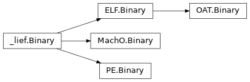
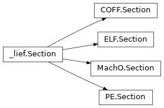
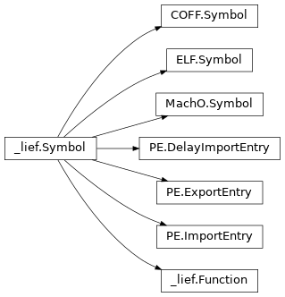
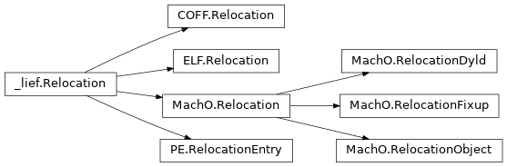

Bases: Object
Generic interface representing a binary executable.
This class provides a unified interface across multiple binary formats such as ELF, PE, Mach-O, and others. It enables users to access binary components like headers, sections, symbols, relocations, and functions in a format-agnostic way.
Subclasses (like lief.PE.Binary) implement format-specific API
Bases: Enum
Enumeration of virtual address types used for patching and memory access.
Return the abstract representation of the current binary (lief.Binary)
Assemble and patch the provided assembly code at the specified address.
The function returns the generated assembly bytes.
Example:
bin.assemble(0x12000440, """
xor rax, rbx;
mov rcx, rax;
""")
If you need to configure the assembly engine or to define addresses for
symbols, you can provide your own AssemblerConfig instance.
The concrete representation of the binary. Basically, this property cast a lief.Binary
into a lief.PE.Binary, lief.ELF.Binary or lief.MachO.Binary.
See also: lief.Binary.abstract
Constructor functions that are called prior to any other functions
Return debug info if present. It can be either a
lief.dwarf.DebugInfo or a lief.pdb.DebugInfo
For ELF and Mach-O binaries, it returns the given DebugInfo object only if the binary embeds the DWARF debug info in the binary itself.
For PE file, this function tries to find the external PDB using
the lief.PE.CodeViewPDB.filename output (if present). One can also
use lief.pdb.load() to manually load a PDB.
Warning
This function requires LIEF’s extended version otherwise it
always return None
Overloaded function.
disassemble(self, address: int) -> Iterator[Optional[lief._lief.assembly.Instruction]]
Disassemble code starting at the given virtual address.
insts = binary.disassemble(0xacde, 100); for inst in insts: print(inst)See also
disassemble(self, address: int, size: int) -> Iterator[Optional[lief._lief.assembly.Instruction]]
Disassemble code starting at the given virtual address and with the given size.
insts = binary.disassemble(0xacde, 100); for inst in insts: print(inst)See also
disassemble(self, function_name: str) -> Iterator[Optional[lief._lief.assembly.Instruction]]
Disassemble code for the given symbol name
insts = binary.disassemble("__libc_start_main"); for inst in insts: print(inst)See also
Disassemble code from the provided bytes
raw = bytes(binary.get_section(".text").content)
insts = binary.disassemble_from_bytes(raw);
for inst in insts:
print(inst)
See also
Binary’s entrypoint
Return the binary’s exported Function
File format (FORMATS) of the underlying binary.
Return the content located at the provided virtual address. The virtual address is specified in the first argument and size to read (in bytes) in the second.
If the underlying binary is a PE, one can specify if the virtual address is a RVA or
a VA. By default, it is set to AUTO.
Return the address of the given function name
Get an integer representation of the data at the given address
Return the Symbol from the given name.
If the symbol can’t be found, it returns None.
Check if the binary has NX protection (non executable stack)
Binary’s abstract header (Header)
Default image base (i.e. if the ASLR is not enabled)
Return the binary’s imported Function (name)
Check if the binary is position independent
Bases: object
Iterator over lief._lief.Relocation
Bases: object
Iterator over lief._lief.Section
Bases: object
Iterator over lief._lief.Symbol
Return binary’s imported libraries (name)
Load and associate an external debug file (e.g., DWARF or PDB) with this binary.
This method attempts to load the debug information from the file located
at the given path, and binds it to the current binary instance. If
successful, it returns the loaded DebugInfo object.
Warning
It is the caller’s responsibility to ensure that the debug file is compatible with the binary. Incorrect associations may lead to inconsistent or invalid results.
Note
This function does not verify that the debug file matches the binary’s unique identifier (e.g., build ID, GUID).
Convert an offset into a virtual address.
Original size of the binary
Get the default memory page size according to the architecture and the format of the current binary
Overloaded function.
patch_address(self, address: int, patch_value: collections.abc.Sequence[int], va_type: lief._lief.Binary.VA_TYPES = VA_TYPES.AUTO) -> None
patch_address(self, address: int, patch_value: int, size: int = 8, va_type: lief._lief.Binary.VA_TYPES = VA_TYPES.AUTO) -> None
Return an iterator over abstract Relocation
Remove the section with the given name
Return an iterator over the binary’s abstract sections (Section)
Return an iterator over the binary’s abstract Symbol
Return all virtual addresses that use the address given in parameter
Bases: Object
Class which represents an abstracted Header
Bases: Enum
Bases: Enum
Bases: Enum
Bases: Enum
Target architecture
Binary endianness
Binary entrypoint
True if the binary targets a 32-bits architecture
True if the binary targets a 64-bits architecture
Architecture details
Modes as a list
Type of the binary (executable, library…)

Bases: Object
Class which represents an abstracted section
Section’s content
Section’s entropy
Return the fullname of the section including the trailing bytes
Section’s name
Section’s file offset
Overloaded function.
search(self, number: int, pos: int = 0, size: int = 0) -> Optional[int]
Look for integer within the current section
search(self, str: str, pos: int = 0) -> Optional[int]
Look for string within the current section
search(self, bytes: bytes, pos: int = 0) -> Optional[int]
Look for the given bytes within the current section
Overloaded function.
search_all(self, number: int, size: int = 0) -> list[int]
Look for all integers within the current section
search_all(self, str: str) -> list[int]
Look for all strings within the current section
Section’s size
Section’s virtual address


Bases: Symbol
Class which represents a Function in an executable file format.
Bases: Flag
Add the given FLAGS
Function’s address
Function flags
Function flags as a list of FLAGS
Check if the function has the given flag